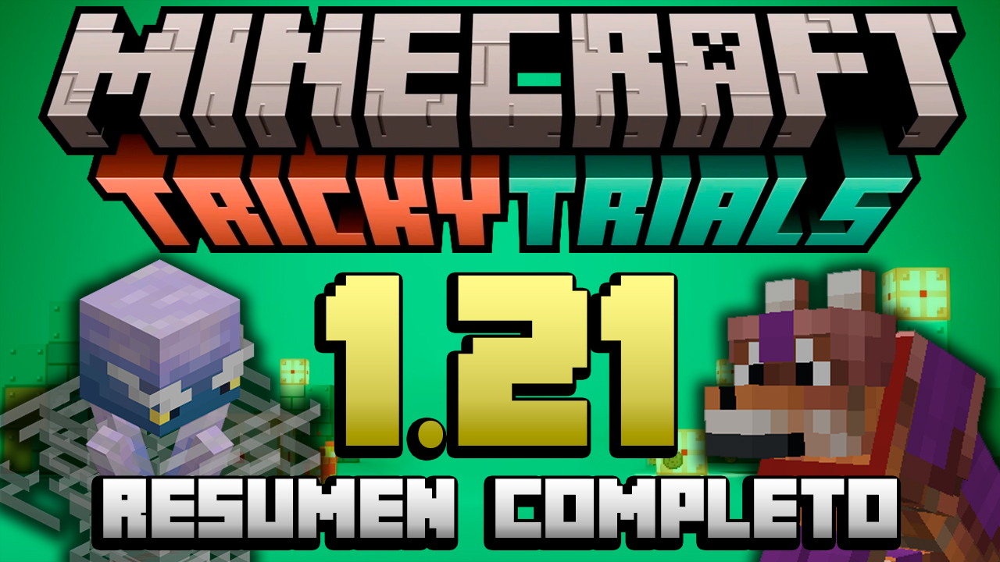
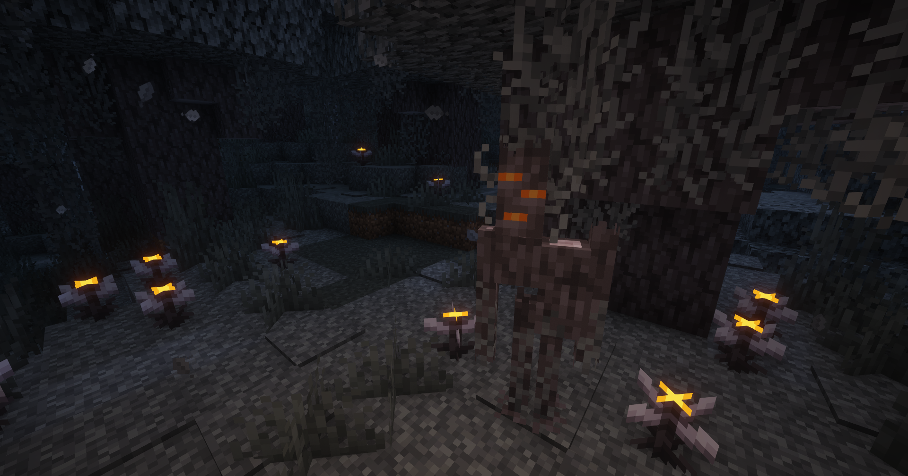
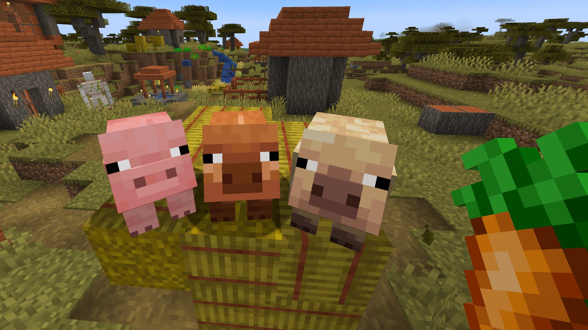
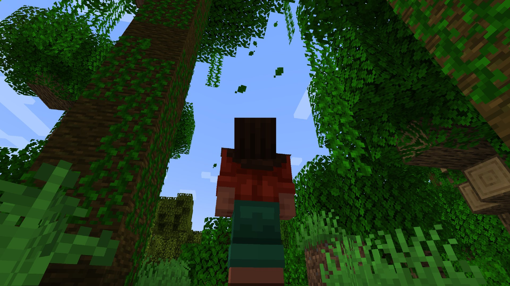
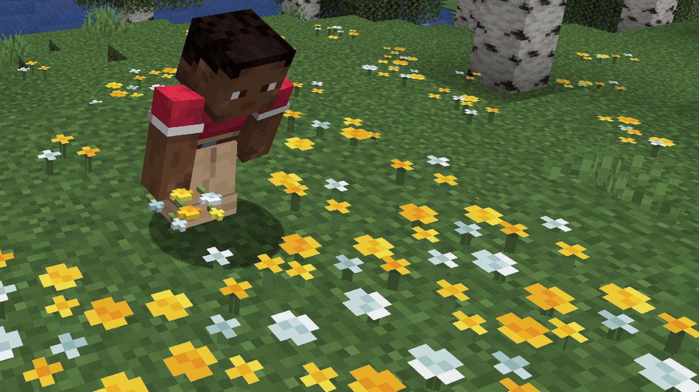

Nueva Actualización para Minecraft Java, Bedrock y PE 1.21
Review Completa sobre Minecraft Java, Bedrock, PE para la versión 1.21+💜
Nueva actualizacion de Minecraft 1.21
Mojang ha lanzado una nueva actualización para Minecraft llamada "The Garden Awakens". Esta actualización gratuita, lanzada el 3 de diciembre, trae consigo nuevos bloques, un bioma inquietante y un temible mob.
Los jugadores pueden explorar el bioma del jardín pálido, recolectar recursos únicos como la madera de roble pálido y enfrentarse al mob conocido como "creaking". ¡No se necesita gastar nada para disfrutar de estas nuevas adiciones!😱
Para saber más sobre esta Nueva Actualización, sigue leyendo el artículo😄 botón morado.

El nuevo bioma de Minecraft: Jardin Palido o Pale Garden
El Jardín Oscuro es una nueva adición importante que llega a Minecraft con la última actualización. Se trata de un bioma completamente forestal que se encuentra en la superficie, con una paleta de colores modificada que difiere de otros ecosistemas. Como su nombre lo indica, el Jardín Oscuro tiene diversos tonos de azul oscuro y negro en su ambientación, creando una atmósfera misteriosa y un tanto inquietante.
Al ingresar en este nuevo bioma, notaremos, entre otras cosas, la presencia total de árboles de roble oscuros, casi podridos, con musgo seco colgante y sonidos atmosféricos que nos recuerdan un bosque real; olvida la música atmosférica y escucha el ruido de ramas crujiendo.
Puedes ver más del Jardín Pálido en el tráiler oficial de este nuevo bioma:
Además de todo lo mencionado anteriormente, y como probablemente ya hayas observado, este nuevo bioma también introduce:
Un nuevo mob, que solo estará presente en este bioma
Flor de ojos: una flor que cambia de color según el momento del día (además es venenosa para las abejas)
Resina: es un nuevo material que solo se encuentra en el Jardín Pálido
Crepitante el nuevo mob hostil de Minecraft
Con la introducción del nuevo bioma en Minecraft, también se ha agregado al juego un nuevo mob bastante escalofriante: el susurrante o whispering. Esta criatura es extremadamente hostil y solo aparece dentro del Jardín Oscuro. El susurrante es la antítesis del enderman, ya que solo nos atacará si dejamos de observarlo.
En este contexto, a diferencia de todas las criaturas conocidas en Minecraft, el susurrante solo puede ser derrotado de una manera única y no es infligiendo daño directo. Para eliminar a este mob, es necesario encontrar su "alma", que aparece entre los robles del Jardín Oscuro, cerca de su punto de generación. Una vez que los jugadores localicen el alma del susurrante entre los árboles, deberán destruirla sin perder de vista al mob.

Además de todo lo mencionado anteriormente, hay algunos datos adicionales que debes conocer sobre el susurrante:
Inflige dos corazones de daño por cada golpe
Cuando no lo vemos, se mueve a la misma velocidad que el jugador
No suelta elementos ni objetos al ser derrotado
Solo aparecen durante la noche en el Jardín Pálido
Nuevos bloques son añadidos
Finalmente, es importante destacar uno de los cambios más anticipados por la comunidad: se han añadido una variedad de bloques completamente nuevos que permitirán realizar una amplia gama de crafteos.
Madera de roble pálido: un nuevo bloque que servirá para crear crafteos de manera similar al resto de árboles
Brote de roble pálido: al destruir el follaje del árbol, esporádicamente recibiremos brotes para plantar robles pálidos en diferentes zonas del mapa
Resina: al destruir el corazón del crepitante recibiremos resina; con nuevo de estos elementos podemos crear bloques de resina
Bloques de resina y variantes: los bloques de resina (creados con resina) sirven para crear escaleras, losas y muros
Bloques de musgo pálidos: se generan únicamente en el Jardín Pálido y no tienen mayor uso que el de la tierra
Corazón del crepitante: puede obtenerse con toque de seda o fabricarse con troncos de roble pálido y resina. Al crearlo y posicionarlo correctamente, podemos invocar un crepitante.
Como puedes observar, aunque no se trate de una actualización mayor, se introducen cambios significativos en el juego que transformarán nuestra experiencia al disfrutar de Minecraft.
Nuevas variantes de Cerdos
Se han añadido dos nuevas variantes de cerdos: el cerdo cálido y el cerdo frío. Estos cerdos tienen texturas y geometrías únicas y aparecen en diferentes biomas, haciendo que estos se sientan más distintos entre sí.

Particulas de Hojas
Ahora, todos los bloques de hojas emiten partículas de hojas que caen. Esto afecta a varios tipos de hojas, como las de roble, jungla, acacia, roble oscuro, abeto, manglar, abedul, azalea y azalea floreciente.

Las Flores blancas y amarillas ahora en tintes
Las flores blancas y amarillas se pueden convertir en tinte.

La nueva actualizacion de Minecraft ya se encuentra disponible en todas las plataformas
Recuerda que la actualización de Minecraft The Garden Awakens ya está disponible en todas las plataformas donde se lanzó el juego de Mojang, incluyendo tanto las versiones Java como Bedrock.
Así que, si juegas en PC, Android, PS4, PS5, Xbox One, Xbox Series X/S, Nintendo Switch, iOS, Linux o Mac, puedes disfrutar completamente gratis del nuevo mob, bioma y bloques.
Mantente al tanto
¡Sígueme en mis Redes Sociales para no perderte las Novedades y tener un mejor contacto conmigo!
Te recomiendo seguirme en Instagram y X para poder responderte más rápido, estoy siempre activo😄💜